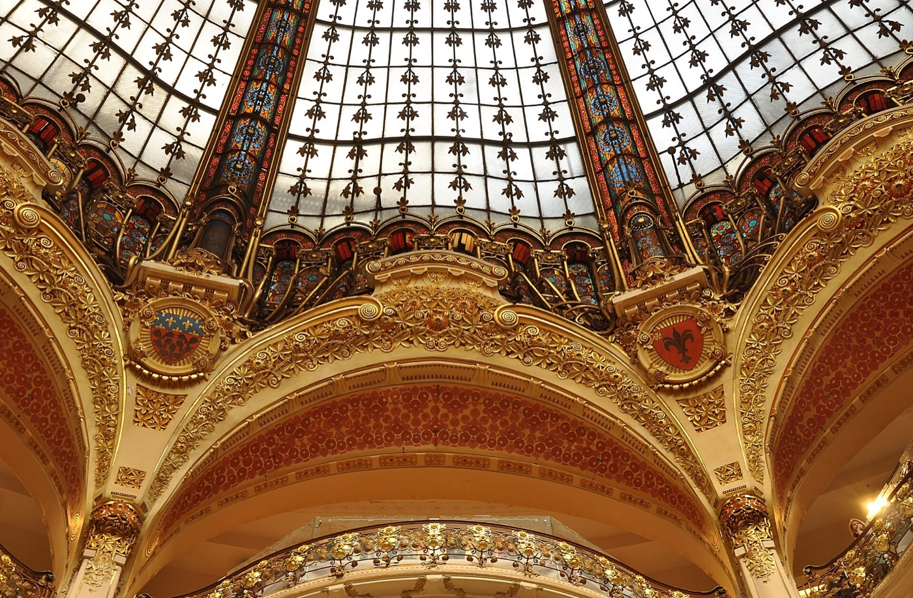
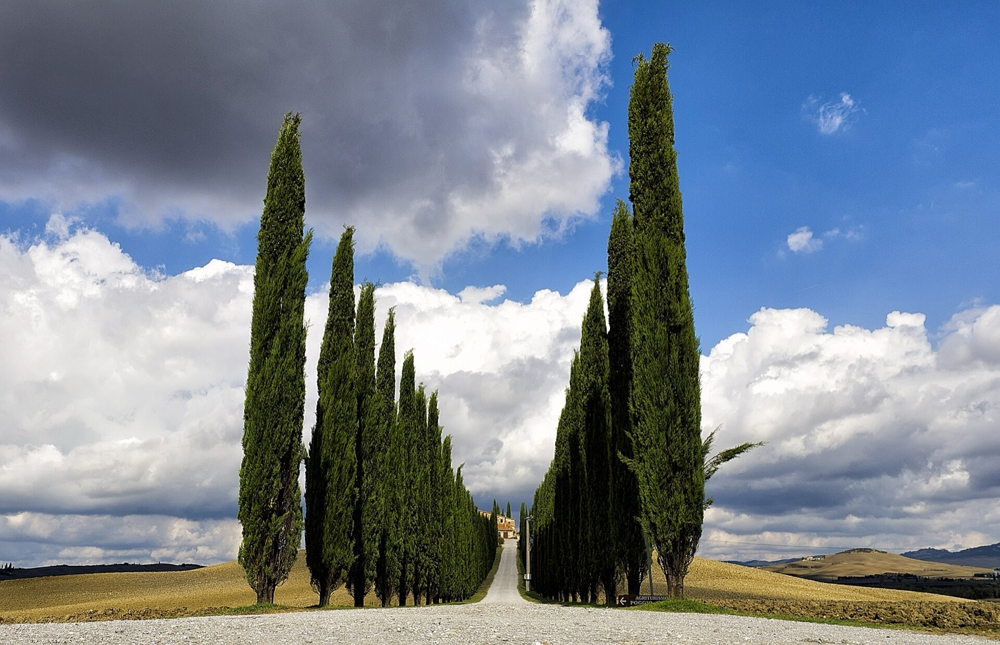
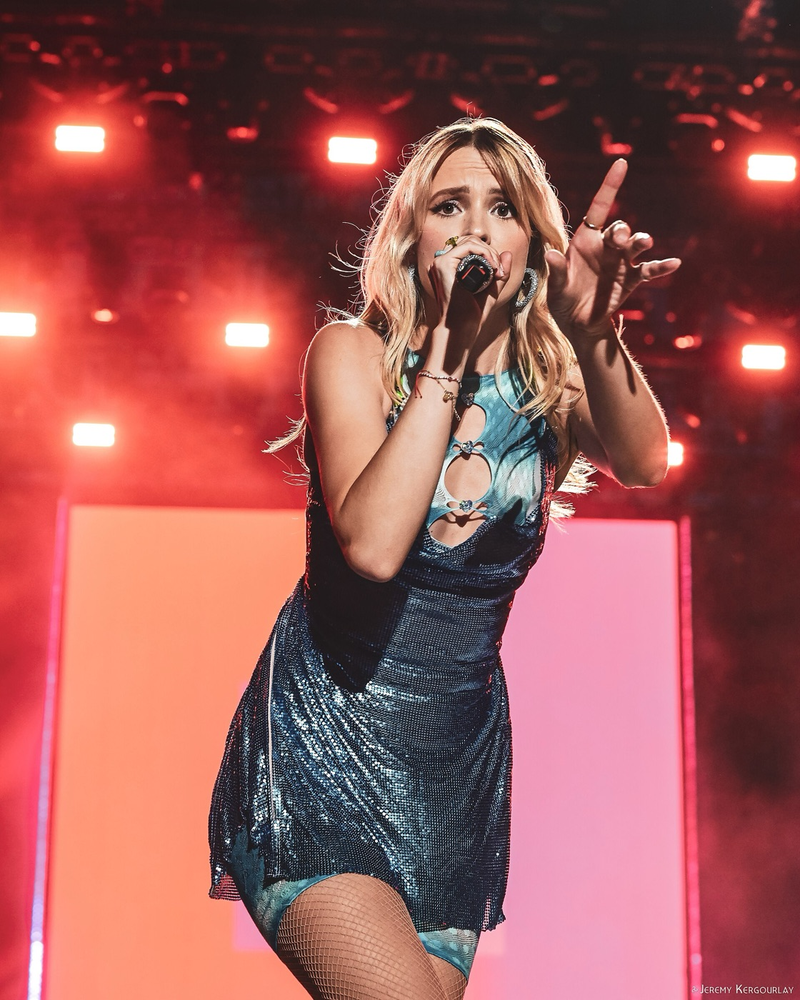
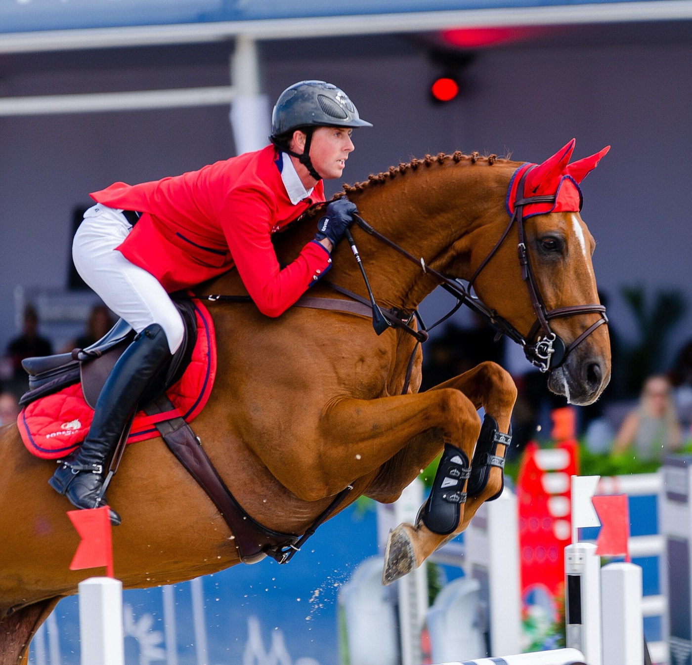

Pick a voucher
Scan the QR code on the voucher you drew to see what's waiting for you.

A pastry class in Paris
Put on an apron and bake a classic French dessert with a pastry chef from FERRANDI Paris, France's most famous culinary school. Then taste what you made.
- Where
- Ferrandi kitchen, 3rd floor, Lafayette Maison & Gourmet, 35 Boulevard Haussmann, Paris 9e
- How long
- 2 to 3 hours, tasting included
- Group
- At most 6 people, taught in French or English
- When
- Classes run Wednesday, Friday and Saturday at 3 PM. You pick the date.
What you might bake
The recipe changes with the season. Recent classes made a Paris-Brest, a vanilla flan with hazelnut praline, and two Yule logs at Christmas. Other seasons bring tarte Tatin, chocolate tart and mille-feuille.
Arrive 5 to 10 minutes early and bring ID. Entry closes 15 minutes after the start. See the class page

A long weekend in Italia
A few days in Florence for art, food and evening walks along the Arno, then the countryside: cypress-lined hills, vineyards, long lunches and Chianti.
- Where
- Florence, then a country estate in Chianti or the Val d'Orcia
- When
- A long weekend in April or early May, when the hills are green and the wisteria is in bloom
- How long
- 3 to 4 nights
- Getting there
- Fly to Florence, Pisa or Bologna
Ideas for the weekend
- The Uffizi and the view from Piazzale Michelangelo at sunset
- Lunch at the Mercato Centrale
- A wine tasting in the Chianti hills
- Siena, Montepulciano or Pienza for a day
We'll choose the dates and places together.

Angèle, live
Tickets to see Angèle on her new Instinct Tour, with the songs from her new album and the ones you already know by heart.
- Paris
- Accor Arena, March 2027
- Brussels
- ING Arena, 20 & 21 March 2027
- Amsterdam
- AFAS Live, 11 May 2027
- Also
- London, Barcelona, Berlin in spring; Lille, Lyon, Bordeaux and more in autumn
We'll pick the city and the night together. Some dates are already selling out, so we won't wait long.

The Dutch Masters
A weekend at The Dutch Masters, one of the four majors of the Rolex Grand Slam of Show Jumping. The world's best riders and horses compete in show jumping and dressage, and the weekend ends with the Rolex Grand Prix. Then a weekend away.
- Where
- Brabanthallen, 's-Hertogenbosch, the Netherlands
- When
- 11 to 14 March 2027. The Rolex Grand Prix is usually on the Sunday.
- Stay
- A weekend in the old town of Den Bosch
Around the event
- The Rolex Grand Prix, the event's main show-jumping class
- A walk through the old town and St. John's Cathedral
- A Bossche bol, the town's famous chocolate pastry
With love